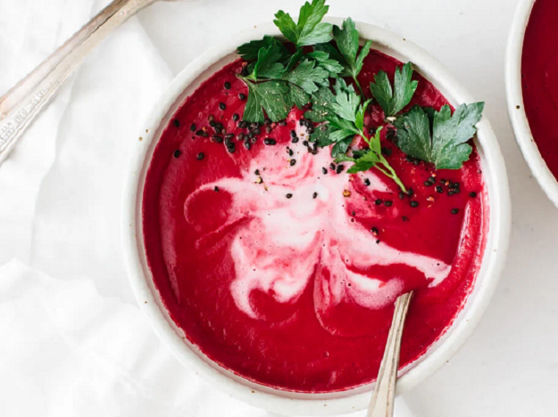

Recipe Borsch :
Ingredients Meat (10 people) :
- Porc meat 500g
- Garlic 4 cloves
- Bayleaf 4 leaves
Ingredients Soup :
- Water 3L
- Beets 3 units
- Potatoes 4 units (large)
- Onion 3 units
- Carrot 3 units
- Vinegar 3 teaspoons
- Sugar 2 tablespoons
- Bayleaf 2 leaves
- Fresh parsley, 1 botte
- Dill, 1 botte
- Sour Cream, 200g
- Sel, Poivre.
Préparation (1h 30min) :
Crush garlic, bayleaf and massage the spices into the meat, leave to rest for 30min.
Once rested, braise the meat. Once cooked through, cover with water, and bring to simmer.
Cut onion, carrot, potatoes and beets in a paysane. Sweat the onions, add the carrots, and cook through. Add all these to the soup, with the herbs, but keep some chopped dill to the side. Let simmer 1 hour.
Once the soup is done, you can either leave it as is, or blend it with a mixer.
Serve pipping hot, with sour cream and dill!
